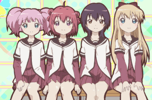

A kedvenc animém!
A képre kattintva elkezdheted megnézni!
YuruYuri, is a Japanese manga series written and illustrated by Namori. The series began serialization in Ichijinsha's Comic Yuri Hime S magazine from June 12, 2008, before being moved over to Comic Yuri Hime in September 2010. An anime adaptation by Dogakobo aired in Japan between July and September 2011, with a second season airing between July and September 2012. An original video animation by TYO Animations was released on February 18, 2015, followed by two TV specials which aired in August and September 2015. A third TV season by TYO Animations aired between October and December 2015. A spin-off web manga, Ohmuroke, began release on Nico Nico Seiga in July 2012.
Characters The Amusement Club Akari Akaza Kyoko Toshino Yui Funami Chinatsu Yoshikawa Student Council Ayano Sugiura Chitose Ikeda Sakurako Ohmuro Himawari Furutani Rise Matsumoto Family Members Mari Futami Kaede Furutani Chizuru Ikeda Akene Akaza Tomoko Yoshiwaka Nadeshiko Ohmuro Hanako Ohmuro